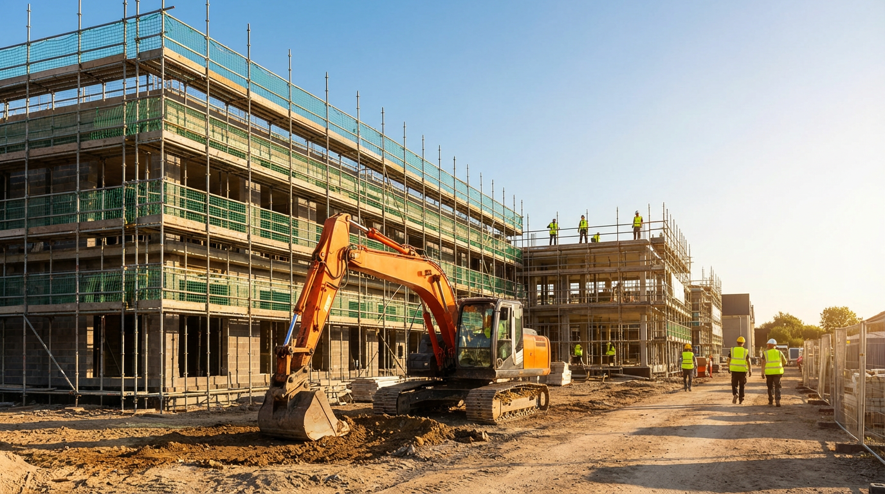

Construction companies rely on a mix of financing to fund equipment purchases, payroll, materials, and growth. Axiant Partners connects contractors with lenders offering equipment financing, SBA loans, working capital, and more. Whether you're a general contractor, specialty trade, or heavy civil operator, we match you with financing that fits your business.
Industry Overview
Construction businesses face high upfront costs for equipment, vehicles, and materials. Project-based revenue and seasonal demand create cash flow gaps between contract draws and progress payments. Many contractors need financing to cover payroll and subcontractors before invoices are paid, to bid on larger projects, and to expand their fleet without depleting reserves.
Equipment purchases—excavators, dump trucks, loaders, and trailers—often run into the hundreds of thousands of dollars. Equipment financing and working capital loans help contractors acquire and maintain assets while preserving cash. SBA loans support longer-term needs like real estate and business acquisition, while lines of credit provide flexibility for day-to-day operations.

How Contractors Use Financing for Their Business
Contractors use financing in several practical ways. Many take out equipment loans to buy excavators, dump trucks, and loaders—spreading the cost over the equipment's useful life instead of tying up cash. Others use working capital loans to cover payroll and materials between project draws, when progress payments haven't yet arrived. Some contractors secure SBA loans to acquire another company, purchase their shop or yard, or fund a major fleet expansion.
Seasonal and project-based cash flow makes financing especially useful. A general contractor might use a line of credit to bridge slow winter months, while a heavy civil operator might finance a new excavator to bid on a larger earthmoving project. Whether the goal is growth, stability, or efficiency, contractors often rely on a mix of financing products to keep projects moving and the business competitive.
Construction Business Financing Options
General contractors, specialty trades, and heavy civil operators need tailored financing for heavy equipment purchases, project payroll, and growth. Whether you're searching for construction equipment financing, contractor working capital loans, or SBA loans for construction companies, the right product depends on your use of funds and timeline.
Common Construction Equipment That Businesses Finance
Construction contractors frequently finance heavy equipment and vehicles. Below are common types, typical cost ranges, and why businesses finance them.

Excavators
Excavators are used for digging, trenching, demolition, and site preparation. Depending on size and brand, they can cost roughly $80,000–$500,000. Many contractors finance excavators to preserve working capital and match payments to project revenue.
Explore excavator financing
Dump Trucks
Dump trucks haul materials, aggregates, and debris. New models range from about $80,000 to $200,000 or more. Financing helps contractors add or replace trucks without large upfront outlays.
Explore truck financing
Skid Steers
Skid steers handle grading, material handling, and site cleanup. They typically cost $25,000–$75,000. Contractors often finance skid steers to improve job capacity and efficiency.
Explore skid steer financing
Bulldozers
Bulldozers perform earthmoving, grading, and site clearing. Prices range from about $100,000 to $500,000 or more. Financing spreads the cost over the equipment's productive life.
Explore dozer financing
Wheel Loaders
Wheel loaders move materials, load trucks, and handle bulk handling. They typically cost $80,000–$300,000. Contractors finance wheel loaders to support quarry, demolition, and site work.
Explore loader financing
Backhoes
Backhoes combine a loader and excavator for digging, trenching, and utility work. They generally cost $50,000–$150,000. Financing helps utility and site contractors add or replace units.
Explore backhoe financingEquipment Financing Guides for Contractors
Contractors considering equipment loans often ask these questions. Our guides cover credit requirements, used equipment, rates, and approval timelines. For a full overview of equipment financing, see Equipment Financing.
Apply for Construction Business Financing
Construction companies need financing that fits project cycles and cash flow. Axiant Partners connects contractors with lenders that offer equipment loans, working capital, SBA loans, and more. Submit your information once and we match you with programs suited to your business profile. Get matched with a lender or contact our team to discuss your needs.